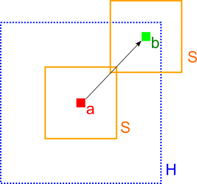
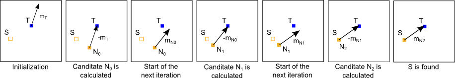

MaximalBlink
Master Thesis by Clemens Rögner
My Master Thesis is based on an idea from Johannes Hanika from the Karlsruhe Institute of Technology, where i spent 6 months of implementing the new algorithm under his supervision. The new technique does upsampling in rendering sequences by using a non-local means denoising algorithm to find similar pixels in adjacent frames. As of now, the implementation is finished, but the actual writing of the thesis is not yet done.
- How it works
-
Non-local means For denoising
The non-local means denoising algorithm works as follows: it calculates a new value for pixel a by looking into the spatial neighbourhood H. For each pixel b of the neighbourhood a weight is calculated that will determine how much that pixel contributes to the new value. This weight depends on the difference between the surrounding S of both pixels. This is done by comparing each pixel in that surrounding:

For a more in-depth look see the paper 'An Improved Non-Local Denoising Algorithm' of Goosens et al. or the GPU adoption of the algorithm, which rearranges the calculations so the benifit execution on the GPU (and the CPU as well). In the Master Thesis the similarity weight between two pixels is taken as an indicator on how likely one pixel moved to another ones location in an adjacent frame of a sequence.Motion Vector Technique AKA optical flow
This technique takes the color information from two ground truth frames and applies the non-local means algorithm on them to calculate the movement of the pixels. Now it is possible to approximate the frame in between those two frames via a so called iterative searc which was proposed by Yang et al. in 'Image-space bidirectional scene reprojection'. This iterative search looks up the source pixel of every position in the frame. The following image depicts how this is done for a target pixel T and source pixel S with the motion vector m: 
Pixel Similarity Technique The better one
This technique works with meta-data of a pixel instead of its color. The first step of this technique is to render the frame in between two ground-truth frames without the light transport, but with the meta-data. Then the non-local means algorithm can be used to find similar pixels and use their color to generate the missing frame. The meta-data consists of spatial information and information about the incoming light.
- Results
-
Ground truth 60 fps rocks
The test sequence consists of three scenes featuring:
- two rotating and reflective cubes
- a diffuse object that changes its size
- a transparent and rotating object
Motion Vector Technique
In our video of the test sequence one can see that this method has problems dealing with rotation, scaling to some extend and rapid color changes in general, due to the nature of the non-local means algorithm. This is especially visible in the third scene where all those problems lead to incoherent motion vectors across the transparent cube.
Pixel Similarity Technique
The result looks can be seen in this video.
As one can see this method does not suffer from the problems of the previous technique as much. However, some discontinuities can be observed around the edges of fast moving objects. - Renderer
-
Features Whats possible
The geometry in the render is described via distance estimators. This allows for distorted, merged and fractal objects. The renderer features diffuse, transparent and reflective surfaces. As for optimizations I implemented BRDF(Phong) importance sampling as well as light source importance sampling.
Multi-Core 160 threads
The rendering software runs on a machine with 80 CPUs with hyper threading, which results in 160 parallel threads possible. The multi-threading is done via the C++11 standard library. The following rendering took about 4 hours on that machine, whilst a frame for the test sequence finished in around 13 minutes: